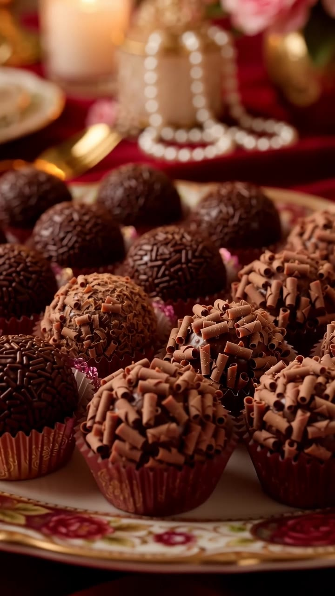
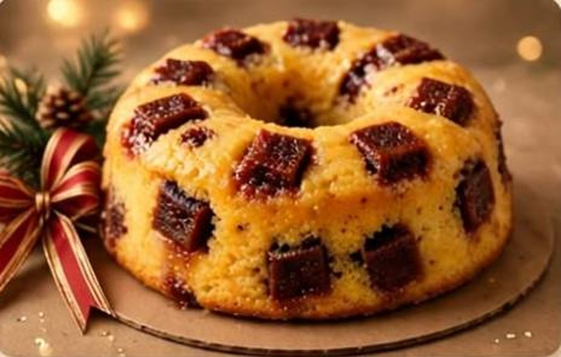
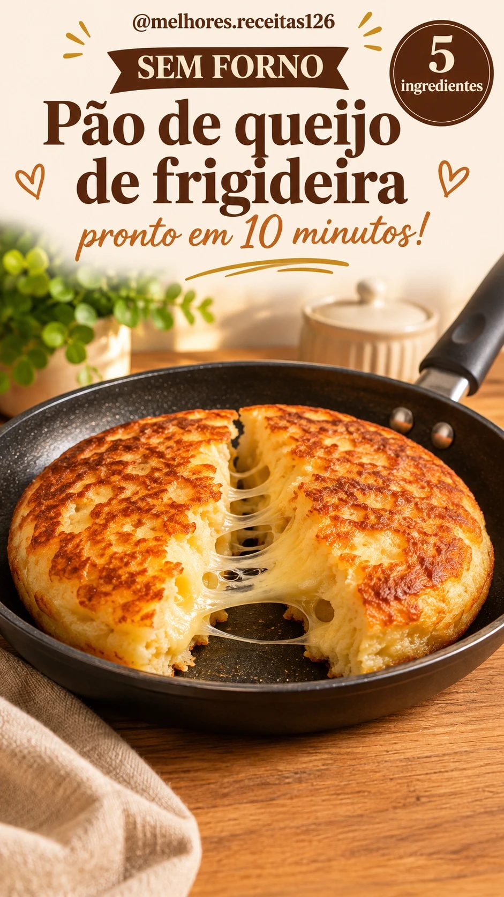
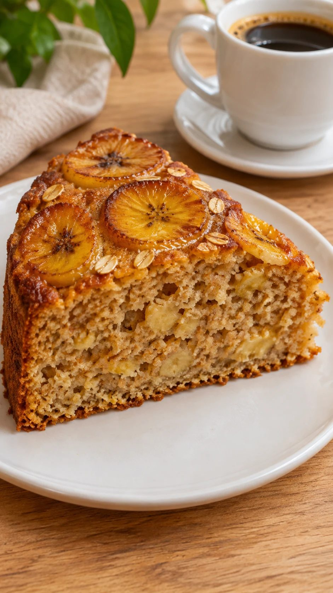

Receitas fresquinhas
Bolo floresta negra molhadinho e fofinho
Bolo floresta negra de Natal: massa de chocolate molhadinha, recheio de chantilly com cerejas e creme de chocolate, cobertura com drip de chocolate e muitas cerejas.

Brigadeiro gourmet ao leite
Brigadeiro gourmet de chocolate ao leite: macio, brilhante e com sabor intenso. Receita com chocolate nobre, ideal para festas, presentes e para vender.

Bolo de nozes com dois doces de leite e chantilly
Bolo de nozes com massa fofinha, recheios cremosos de doce de leite claro e escuro e cobertura de chantilly, decorado com nozes e cerejas. Perfeito para a ceia de Natal.

Couve-flor gratinada cremosa
Couve-flor gratinada cremosa com molho branco, muçarela e parmesão, douradinha no forno. Receita fácil, pronta em 40 minutos, para acompanhar o almoço ou jantar.

Salpicão de frango cremoso para a ceia de Natal
Salpicão de frango cremoso para a ceia de Natal: frango desfiado, legumes, maçã e uva-passa num molho de maionese com creme de leite, finalizado com batata palha.

Bolo de chocolate recheado com raspas de chocolate
Bolo de chocolate recheado com brigadeiro cremoso, coberto com ganache e raspas de chocolate. Massa fofinha e molhadinha, perfeito para aniversário e fim de semana.
Bolo de laranja com calda
Bolo de laranja de liquidificador com a fruta inteira, feito em forma de pudim e coberto com calda de laranja. Simples, fofinho e perfeito para presentear no Natal.
Bolo de cenoura com chocolate
Bolo de cenoura de liquidificador feito em forma de pudim, com cobertura de chocolate brilhante. Receita simples, fofinha e ótima para presentear no Natal.

Bolo de fubá com goiabada
Bolo de fubá fofinho com pedacinhos de goiabada, feito em forma de pudim. Receita simples e caseira, ótima para presentear no Natal.

Bolo de coco fofinho
Bolo de coco fofinho com leite de coco e coco ralado, feito em forma de pudim. Simples, delicado e perfeito para presentear no Natal.

Pavê de três leites sem forno
Pavê de três leites sem forno: creme de leite condensado, leite e creme de leite em camadas com biscoito maisena, finalizado com leite em pó. Fácil, cremoso e rende 10 porções.

Pão de queijo de frigideira em 10 minutos
Pão de queijo de frigideira com tapioca, pronto em 10 minutos e sem forno. Só 5 ingredientes: ovo, goma de tapioca, queijo ralado, requeijão e sal.
Arroz soltinho: os 7 erros que deixam o arroz empapado
Como fazer arroz branco soltinho: a receita básica e os 7 erros mais comuns que deixam o arroz empapado, com a solução de cada um.
Strogonoff de frango de panela única
Strogonoff de frango cremoso feito em uma panela só, pronto em 25 minutos. Receita fácil com creme de leite, ketchup, mostarda e champignon, para servir com arroz e batata palha.

Bolo de banana de liquidificador com aveia
Bolo de banana de liquidificador com aveia, sem farinha de trigo: úmido, cheiroso e pronto em 45 minutos. Um jeito gostoso de aproveitar as bananas que passaram do ponto.
Nenhuma receita encontrada. Tente outro ingrediente ou veja todas as categorias.
Sobre o Melhores Receitas 126
Nascemos no Instagram @melhores.receitas126 para ajudar quem cozinha em casa todos os dias: receitas rápidas, doces afetivos e truques de cozinha que funcionam de verdade.
Todas as receitas são originais. As imagens são ilustrativas, criadas com inteligência artificial.